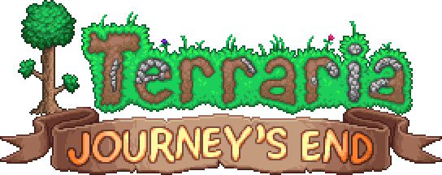
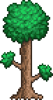

About Terraria
Build...

Explore...

Fight..

And so much, more...
Terraria is a 2D action-adventure-sandbox game, developed by Re-LOGIC. First released on windows on 2011 and has since been ported to other platforms. The game consist of exploration, building, painting, combat and so much more...
Sold by over 44 million copies by 2022. It has become one of the best-selling video games of all time...
But how exactly did Terraria came to be... Well, fellow Terrarians, let us find out as we explore a brief history of the games creations.
First launch
First development began in January 2011 by...

composed by the Developer Name "Redigit" - the designer of the game, and Finn Brice, with Scott Lloyd Shelly as the main
composer of the soundtrack.
The game released on Windows on May 11, 2011. And just 6 months after that, the game immediately recieved another update
A nice solid start for the game, as I would say.
Other releases
For console
Redigit would announce the release of Terraria on X-Box and Consoles via the developers of [Engine Software] and...
The following releases are as follows:
- Xbox 360 on March 27, 2013
- Playstation 3 on March 26, 2013 [North America]
- Playstation 3 on May 15, 2013 [Europe and Australia]
- Playstation Vita on December 11, 2013 [Europe]
- Playstation Vita on December 17 [North America]
For mobile
On the May of 2013, announced a mobile version of Terraria ported by Dutch studio Codeglue for Android, iOS, and Windows Phone.
The IOS version of Terraria was then released on August 29, 2013 , and for Android on September 13, 2013. The Windows Phone version was released on September 12, 2014.
This is just only the beginning as Terraria will soon be receiving multiple hotfixes in the upcoming years...
1.2 and 1.3 Update
The 1.2 Release
On the October of 2013, Terraria 1.2 was released on Windows - The second major update of Terraria. This version a lot of new mechanics, items, gameplay change and much more.From this point on, the game recieved continuous updates, with the mobile and console version of this update released on 2014, and was also published in in the same year. A downloadable version of this update was then released on PlayStation 4 on November 11, 2014.
On 2015, Terraria were both released on Linux and macOS. This version of Terraria were continued upon by the developers up until 1.2.4.1.
The 1.3 Release
On June 30, 2015, where Terraria recieve its third, and perhaps the biggest content update - The 1.3 Update - adding even more items, events, enemies, bosses, and gameplay features. The console version was then released on December 12, 2017, and August 27, 2019 for mobile. The Nintendo Switch version, ported by 505 Games, was then released on June 27, 2019. In December 2018, announced that development of the 1.3 update for mobile would be taken over by Studios to help Pipeworks focus on the Switch port of the game. They too would also be in charge for developing the Console and Switch versions later on.Journey's End
Prior to the 9th anniversary of Terraria, the studio would then release their "final" update, named...

Or simply called, the 1.4 Update.
Like with previous releases, it featured new items, enemies, gameplay features. And two new difficulty modes.
Ironically... despite the title, Terraria still continued to recieve updates, such as minor hotfixes and content updates.
such as the 10th anniversary patch, The Don't Starve Collaboration Update, and the Labor of Love Update - showing such passion
behind the ever-growing developers of Re-LOGIC.
Of course, the mobile and console were not left alone, as DR Studio have
ported the 1.4 version on October 20, 2020 for Mobile and IOS, and September 31, 2021 for Xbox 360,
Playstation 4, and PS4; and lastly, January 4, 2022 for Nintendo Switch.
A continuation of A Journey
Until this day, Terraria is still being worked on by these passionate developers, with them still planning to release 1.4.5.
As the developers themselves have shown some snippets and spoilers for the upcoming update on their twitter page
Up to this day, Terraria has been recieved with favorable reviews from many critics, and up until 2022,
has over 44,500,000 million copies sold, making it the Top 15 most sold games of all time.

This is the end, Take a breath and relax under this nice tree :D